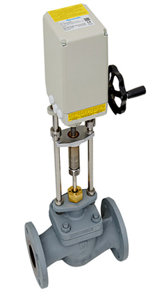
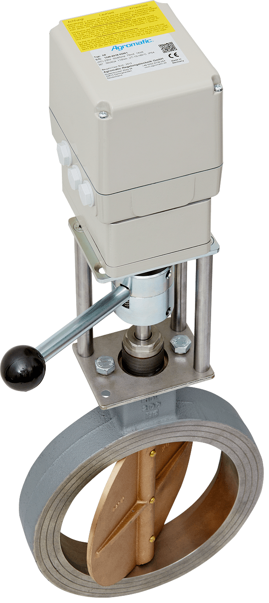
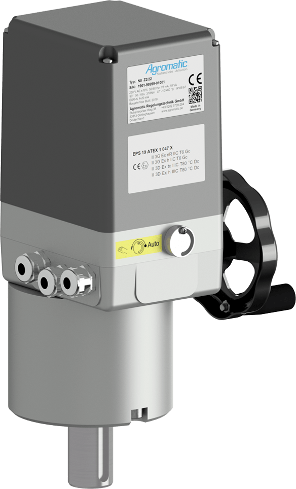
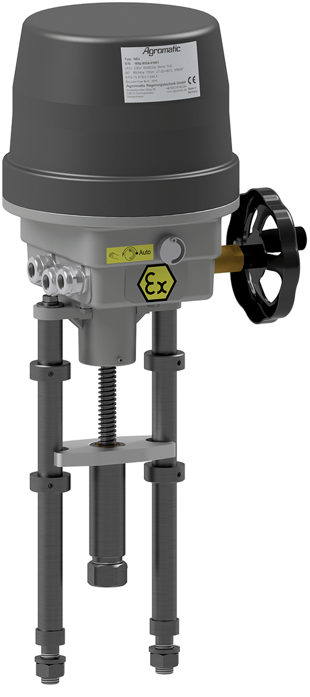
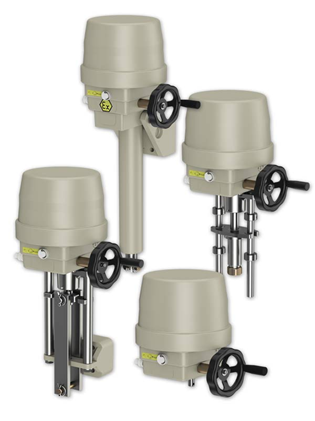
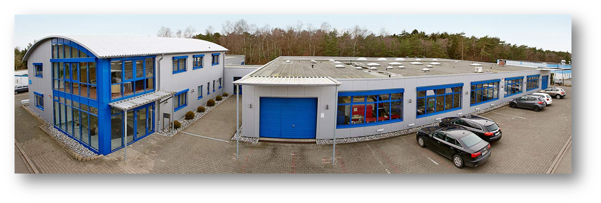

Agromatic entwickelt und fertigt hochwertige Stellantriebe für das präzise Bewegen, Regeln und Steuern von Armaturen – zuverlässig, langlebig und exakt auf Ihre Anwendung abgestimmt.
Eine besondere Stärke von Agromatic sind Antriebslösungen für vibrationsstarke Einsatzbereiche – zum Beispiel für Zentrifugen, im Bahnbereich und für weitere anspruchsvolle Sonderanwendungen.
 Linearantrieb
Linearantrieb

Schwenkantrieb auf Armatur mit Getriebeauskupplung und Handrad
Schwenkantrieb mit Klemmhebelkupplung
Ex-Zonen 2 und 22 Antrieb mit hohem Drehmoment Ex Zone 1 Drehantrieb
Ex Zone 1 Drehantrieb

Ex Zone 1 LinearantriebAgromatic steht für hochwertige elektrische Stellantriebe, die speziell für anspruchsvolle Industrieanwendungen entwickelt werden. Mit eigener Fertigung in Oerlinghausen, jahrzehntelanger Erfahrung und hoher ATEX-Kompetenz entstehen zuverlässige Lösungen, die exakt auf die Anforderungen unserer Kunden zugeschnitten sind.
Unsere Antriebe sind auf dauerhafte Funktion, hohe Belastbarkeit und präzise Stellbewegungen in industriellen Umgebungen ausgelegt.
Von Standardausführungen bis zu individuellen Sonderlösungen entstehen Produkte, die technisch und wirtschaftlich zu Ihrer Aufgabe passen.
Kurze Kommunikationswege und enge Zusammenarbeit ermöglichen schnelle Entscheidungen, saubere Umsetzung und hohe Fertigungstiefe.
Unsere Produktbereiche sind so aufgebaut, dass Sie schnell den richtigen Einstieg finden – von klassischen Drehbewegungen bis zu linearen Anwendungen und explosionsgeschützten Lösungen.
Für präzise Stellbewegungen und hohe Drehmomente in industriellen Anwendungen.
Robuste Lösungen für lineare Bewegungen auch unter anspruchsvollen Einsatzbedingungen.
Sichere und zuverlässige Antriebe für explosionsgefährdete Bereiche und kritische Prozessumgebungen.
Individuell entwickelte Antriebssysteme, exakt abgestimmt auf Ihre Anwendung und Einbausituation.
In explosionsgefährdeten Bereichen sind Sicherheit und Zuverlässigkeit entscheidend. Agromatic bietet elektrische Stellantriebe, die speziell für diese Anforderungen entwickelt wurden und sich in kritischen Anwendungen bewähren.

Unsere Stellantriebe kommen weltweit in unterschiedlichen Industrieumgebungen zum Einsatz – überall dort, wo Prozesse zuverlässig, präzise und langfristig funktionieren müssen.
Zuverlässige Antriebslösungen für unterschiedlichste Maschinen und Anlagen mit hohen Anforderungen an Verfügbarkeit und Funktion.
Sichere und robuste Lösungen für anspruchsvolle Anwendungen und sensible Prozessumgebungen.
Effiziente Steuerung von Armaturen und Prozessen in der Wasserwirtschaft und technischen Infrastruktur.
Zuverlässige Antriebe für kritische Anwendungen in Energieanlagen und Infrastrukturprojekten.

Seit 1972 entwickelt und fertigt Agromatic elektrische Stellantriebe für industrielle Anwendungen. Am Standort Oerlinghausen entstehen Lösungen, die sich durch Qualität, Präzision und Langlebigkeit auszeichnen.
Technische Lösungen mit engem Bezug zur realen Anwendung und hoher Fertigungstiefe.
Kurze Wege, direkte Abstimmung und verlässliche Qualität.
Wir entwickeln langlebige und zuverlässige Produkte, die den Anforderungen unserer Kunden langfristig gerecht werden.
Sprechen Sie mit uns. Wir unterstützen Sie bei der Auswahl der passenden Lösung und beraten Sie kompetent zu technischen Anforderungen, Einsatzbereichen und projektspezifischen Besonderheiten.
Stukenbrocker Weg 38
33813 Oerlinghausen
Telefon: +49 5202 9739 0
E-Mail: info@agromatic.de
Teilen Sie uns kurz Ihre Anwendung, den gewünschten Antriebstyp und besondere Anforderungen mit. So können wir Sie schnell und gezielt unterstützen.